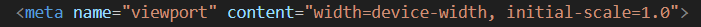
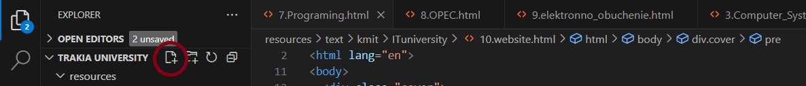
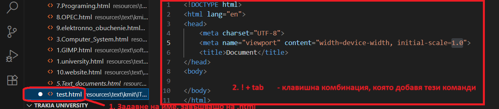
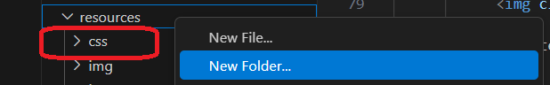
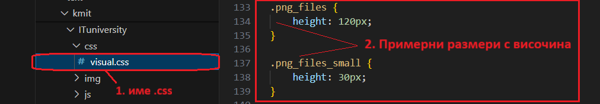
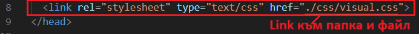
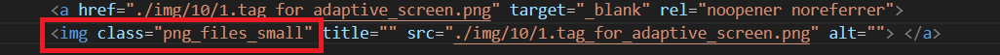
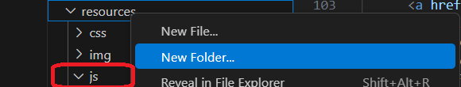
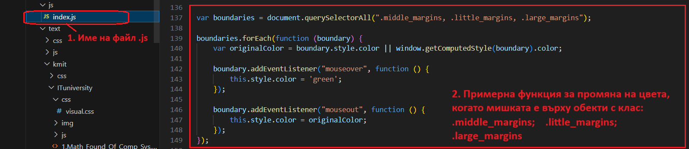
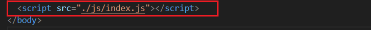

Жизнен цикъл на уеб сайт
Интернет
- Internet - International Network;
- съвкупност от множество по-малки компютърни мрежи свързани помежду си;
- свързаност между милиони потребители по целия свят;
- отдалечен достъп до информационни ресурси и услуги;
- през 1989 г. в Швейцария е представена концепцията за World Wide Web (www) от Тим Бърнърс-Лий;
- процесът на развитие, стандартизация и разгръщане на Интернет продължава и до днес;
- Интернет е по същество е информационна система от взаимно свързани хипертекстови документи;
- могат да съдържат текст, изображения, видео и други мултимедийни компоненти;
- преминаването от един документ към друг се осъществява с помощта на хипервръзки;
- информацията организирана в уеб страници се нарича уеб сайт (обединена мрежа от страници);
- уеб браузърът е софтуер, който е предназначен за разглеждане на съдържанието на тези уеб страници;
- URL адресът/уеб адресът е текст, който съдържа местоположението на всяка уеб страница в Интернет;
- много важна част от Интернет са търсачките, без които би било почти невъзможно откриването на сайтове;
- тяхната цел е да връщат резултати от URL адреси при търсене на конкретно съдържание;
- през 1990 г. е създадена първата търсачка в интернет, която индексира само FTP файлове, но не и страници;
- през 1993 г. е създадена една от първите уеб търсачки - Wandex;
- през 1994 г. започва разработката на Yahoo! като университетски проект;
- през 1996 г. започва работата върху Google, който е официално основан като компания през 1998 г.;
- едва през 2009 г. Microsoft пуска търсачката Bing;
- други популярни интернет услуги са:
- електронна поща - e-mail;
- комуникация в реално време - chat.
Видове web технологии
- Progressive web applications - PWA / Прогресивни уеб приложения
- приложения в уеб, които могат да изглеждат като настолни приложения;
- след инсталиране създават икона на екрана;
- леки са и използват съвременни уеб технологии;
- някои уеб приложения могат да работят и без интернет.
- Blockchain technology / Блокова верига
- криптирана система за съхранение на база данни;
- информация в блокове, която се свързва като верига;
- устойчива на атаки, понеже не позволява промяна на данни;
- позволява транзакции между потребители без намесата на трета страна;
- напълно прозрачна технология.
- Internet of Things (IoT) / Интернет на нещата
- комуникация чрез прехвърляне на данни между устройствата без постоянна човешка намеса;
- приложение на технологията при камери, сензори, сигнално оборудване и други;
- Responsive Web Design / Адаптивен уеб дизайн
- подход за уеб разработка, който се използва за приспособяване към различни размери на екрана;
- сходен дизайн на уебсайт върху различни устройства независимо от размера на екрана;
пример:

Hypertext markup language - HTML
- Създаване на .html в програмата Visual Studio Code:
- Отваряне на програмата -> Explorer -> Създаване/добавяне на създадена папка -> New Untitled Text File

- 1. Задаване на име - test, което завършва на .html ; !!! Началната страница се кръщава index.html
- 2. !+Tab комбинация, която добавя начални команди.

_________________________________________________________________________________________________________________________________
Създаване на .css файл с размери и цветове
- Създаване на .css файл в програмата Visual Studio Code:
- Отваряне на програмата -> Explorer -> Създаване на подпапка към основна папка -> Дясно копче -> New Folder -> с име css

- 1. Дясно копче върху новата папка -> New File -> Задаване на име, което завършва на .css ;
- 2. Име на class "png_files" и "png_files_small" + примерен размер за височина height: 120px и 30px;

- Свързване на .css файл към .html
- в head частта се добавя следната команда:
link rel="stylesheet" type="text/css" href="./css/visual.css :

- важно е в командата за извикване на изображение да е вмъкнат тагът: img class="png_files_small",
който създадохме в .css файла:

_________________________________________________________________________________________________________________________________
Създаване на .js файл, който съдържа различни функции
- Създаване на .js файл в програмата Visual Studio Code:
- Отваряне на програмата -> Explorer -> Създаване на подпапка към основна папка -> Дясно копче -> New Folder -> с име js

- 1. Дясно копче върху новата папка -> New File -> Задаване на име, което завършва на .js ;
- 2. Име на class "png_files" и "png_files_small" + примерен размер за височина height: 120px и 30px;

- Свързване на .js файл към .html
- в body частта се добавя следната команда (с отварящи скоби в началото: <):
script src="./js/index.js"> /script>

Начална страница